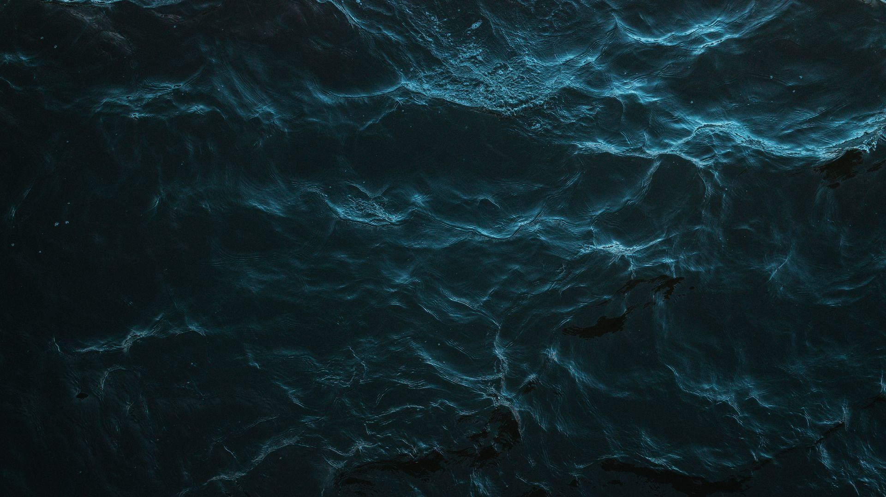
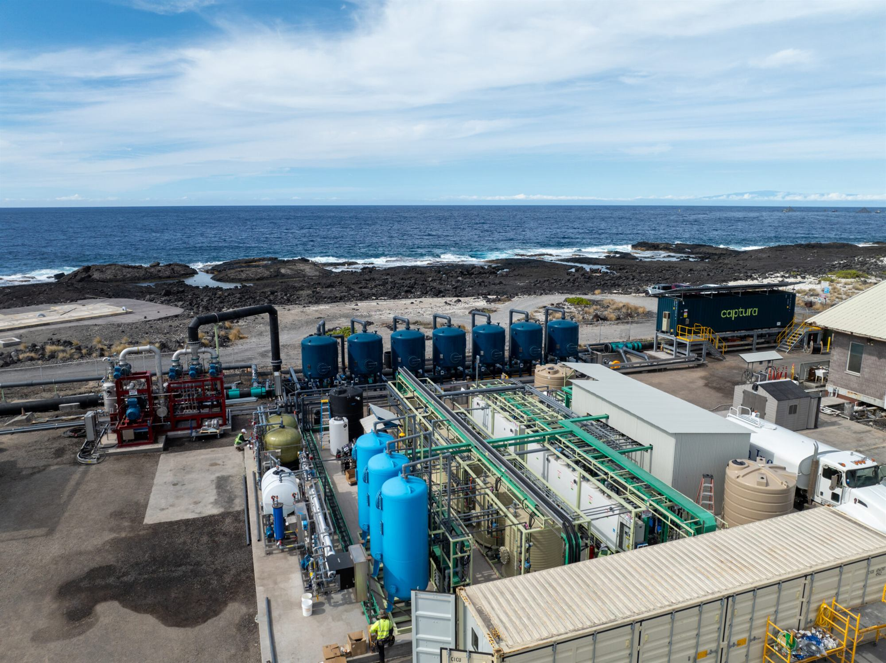
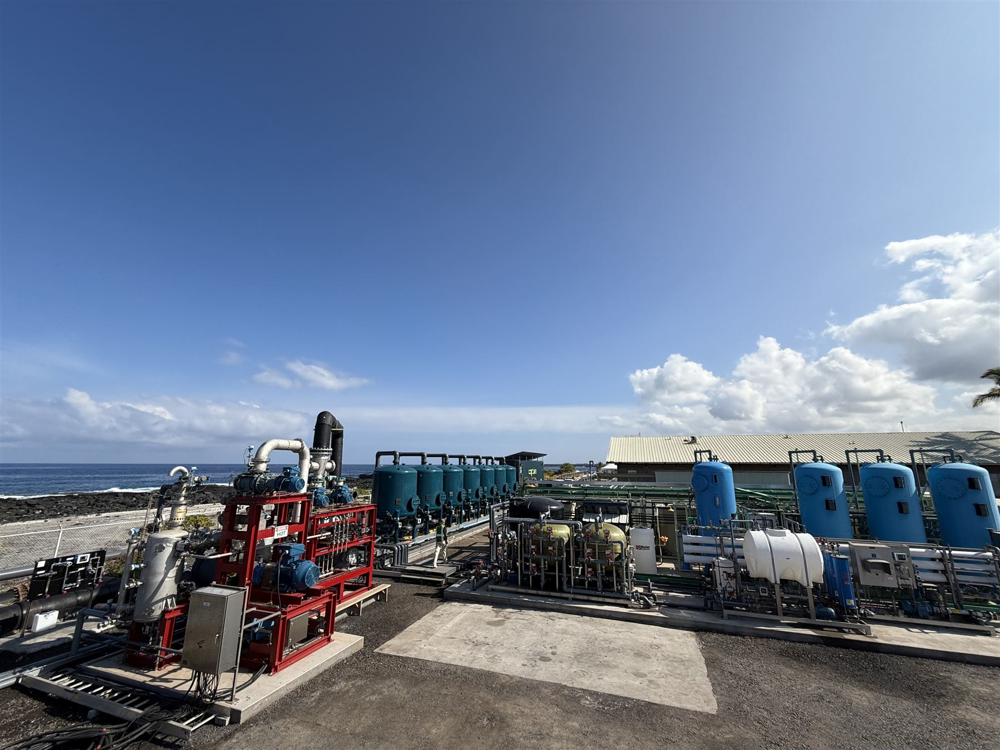
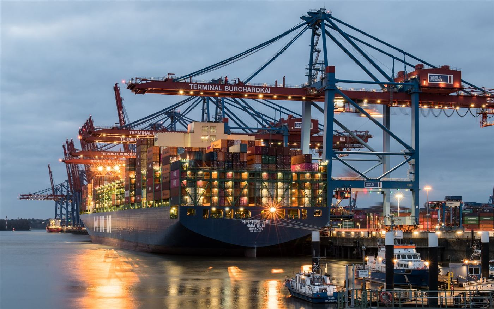
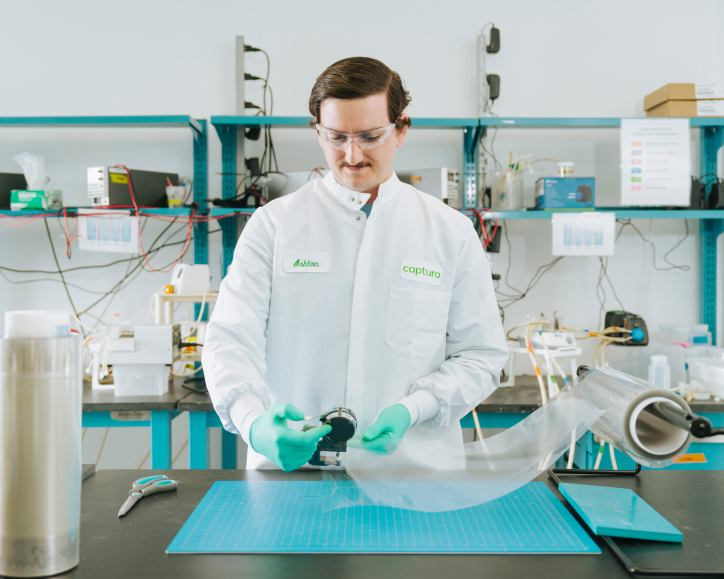
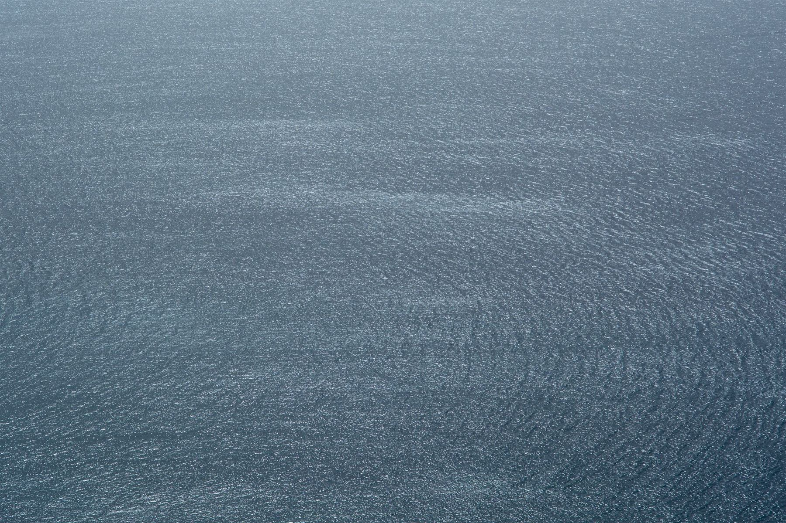

海浦麒董事长实地考察 Captura 夏威夷千吨级海洋碳捕集试点
双方围绕技术经济性、生态安全与在华规模化路径展开交流。

Captura 的投资方与合作伙伴

Captura 第三代试点位于夏威夷大岛 Keāhole Point，年捕集能力 1,000 吨。2025 年 3 月，海浦麒董事长带队实地考察，就技术经济性、生态安全与在华规模化路径与 Captura 团队深入交流。

Keāhole Point, Hawaii→
海浦麒考察团队现场拍摄 · 2025 年 3 月
三年内从 1 吨/年扩大到 1,000 吨/年，各项关键指标全部达标。
早期商业化优先复用现有海洋基础设施，投资更低、落地更快。
查看全部解决方案 →
复用已有取排水系统，省去新建取水工程，把现有设施变成碳移除资产。
共址部署Captura 早期商业化路线
用弃风或低谷绿电驱动捕集，提高消纳；把退役平台改造为碳移除设施。
灵活负荷非高峰绿电即可运行
面向 IMO 碳强度要求与欧盟航运碳成本，提供碳移除采购与港口捕集方案。
30,000 吨商船三井的采购量
就地制备酸碱、回收资源、降低药剂成本，适配青海、西藏等盐湖工况。
电渗析产品膜、电堆、交钥匙系统
DOC 排出的海水 CO₂ 更低、酸性略弱，有望在海湾等半封闭海域缓解局部酸化。
第三方评估与海洋学专家共同研究
依托透明的 MRV 体系开发永久性碳移除信用，对接国际市场，应对 CBAM 等要求。
Frontier代 Stripe、Shopify 预购双方围绕技术经济性、生态安全与在华规模化路径展开交流。
日本企业联合体研究以海水碳移除作为碳信用来源。

资金用于扩大双极膜电渗析产能，覆盖直接提锂与工业应用。

告诉我们你的行业、设施和目标，技术团队会在 2 个工作日内回复。